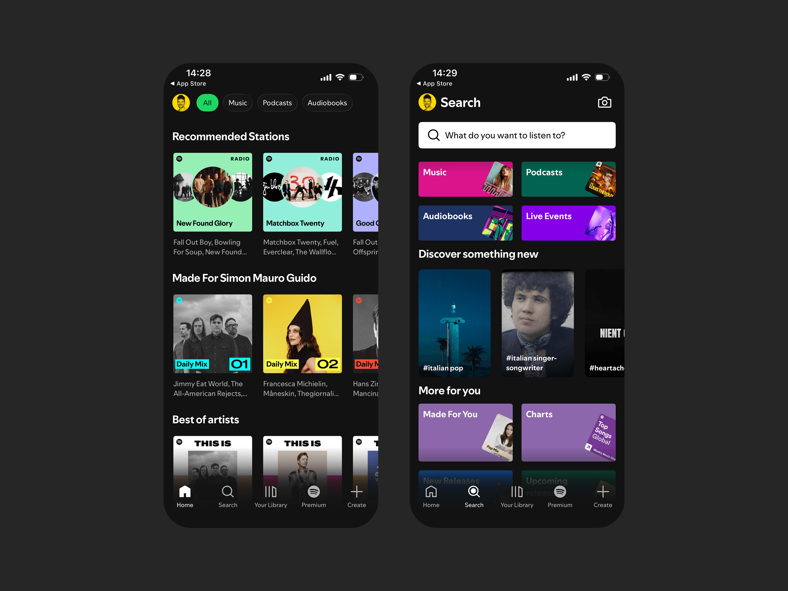
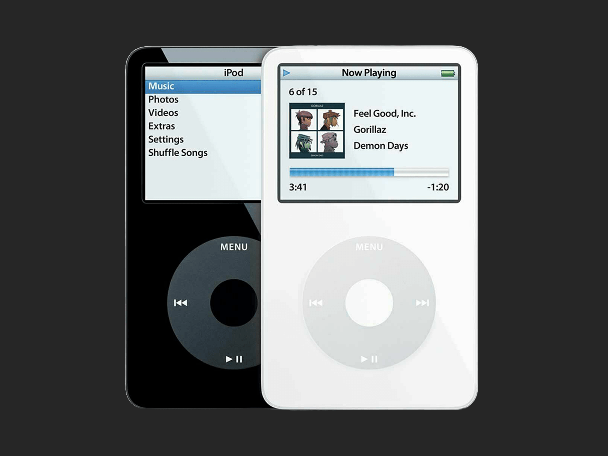
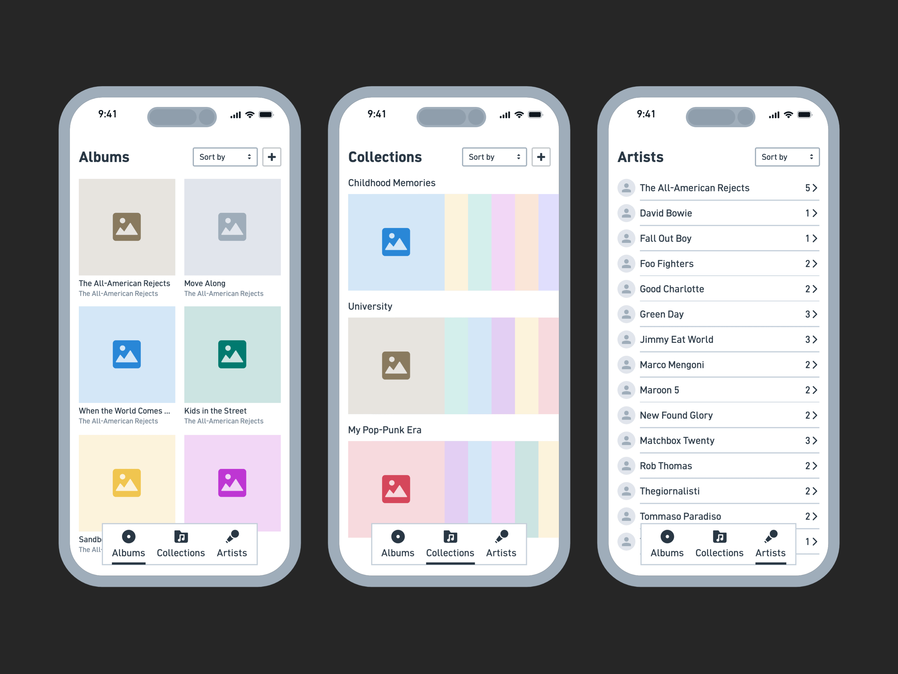
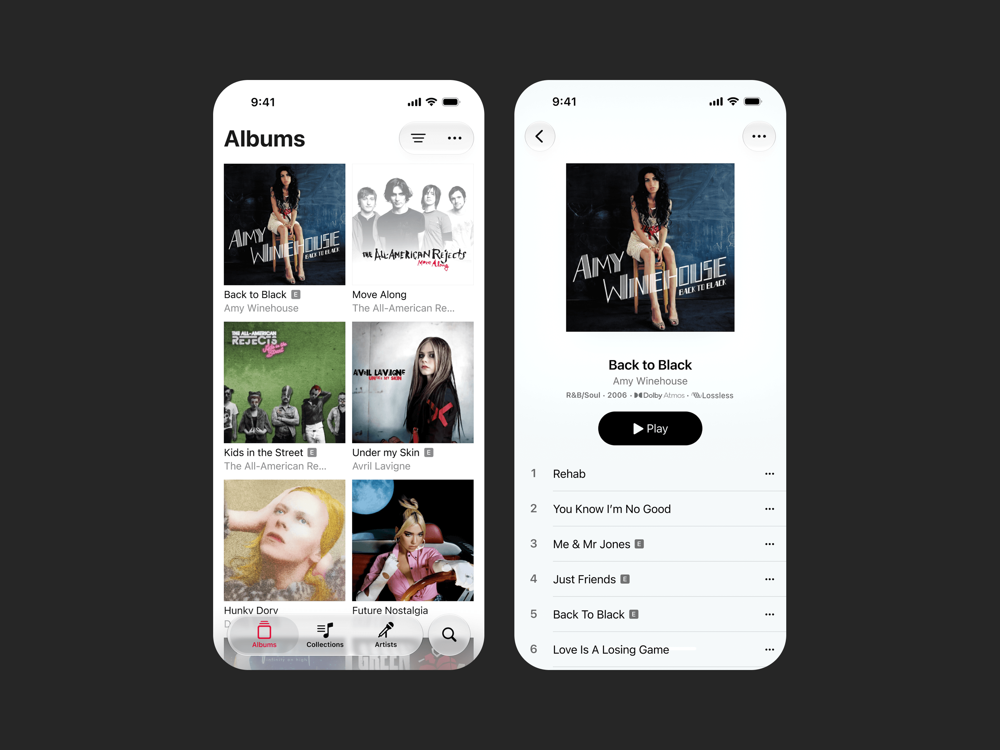
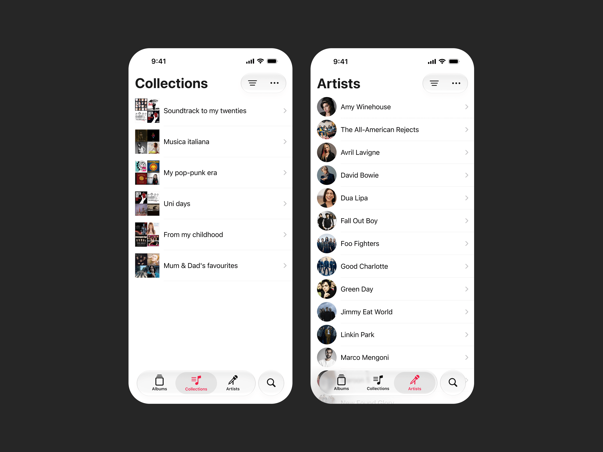

I've become increasingly fed up with the visual noise of music streaming apps. Recommendations, automatically generated playlists, podcasts, promotional content and endless suggestions for things I might want to listen to.
It's not that I don't enjoy discovering new music. But increasingly, it feels like I'm listening to what a streaming service wants me to hear, rather than spending time with my own music collection.

At the weekend, I found myself trying to bring my old iPod Classic back to life. It reminded me just how much I missed curating my own album collection: finding the artwork, organising everything in iTunes, and choosing an album to listen to from beginning to end.
There's something special about that experience. Albums are often written to be heard as a whole, and in order, with songs flowing into one another and telling a story.

And it's not just about the music. Albums can be like a familiar smell: unexpectedly encountering one can take you straight back to a particular time in your life — and the people, places and feelings associated with it. Some albums remind me of entire chapters of my life, not just the songs on them.
So I started thinking: what if there was a music app that put albums right back at the centre of the experience?
I wanted to explore something closer to my old CD collection, but with the convenience of a modern app. A place where my albums are the starting point, rather than recommendations or playlists.
I wanted to explore two ideas in particular: making albums the natural starting point, and giving people a more personal way to organise the music they already love.
The iPod Classic was an inspiration, but I wasn't trying to recreate its interface. I wanted to bring back some of the feeling of browsing a collection and choosing something to listen to deliberately.
I started experimenting with how the different parts of the experience might fit together, keeping the album collection at the heart of it.

Albums first
The app centres around the album collection itself. No recommendations competing for attention, no playlists pushed to the front — just the albums, ready to browse and choose from, much like your old CD collection.

Collections as time capsules
Rather than organising everything by genre or mood, collections let you group albums around the periods, people and places they remind you of. Not just playlists for a particular mood, but little time capsules of the music that has been part of your life.

It's a deliberately simple concept. I'm not trying to replace Spotify, reinvent music streaming or recreate the iPod. I just wanted to explore what a quieter, more personal music experience might look like — one where personalisation means more than being recommended something based on what you've listened to.
Perhaps I just miss my iPod, but I do wonder if in making everything more convenient, we've gradually traded away from some of the simplicity and choice that made the experience feel personal in the first place — and unfortunately it's not just music this applies to.